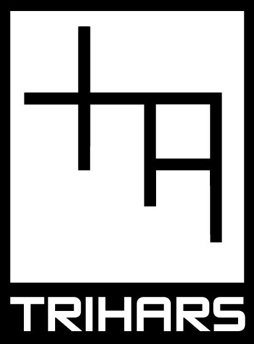

Trihars is an audiovisual electronic collective from Latvia that fuses experimental electronic music ranging from industrial to ambient noise with hypnotic, geometric live visuals.
The group operates as an "audiovisual organism" where the synth and noise soundscapes created by members Kristaps Biters and Peters Riekstins seamlessly interact with
real-time video projections made by Rihards Vitols, making their live performances an immersive multimedia expierence since 2013.